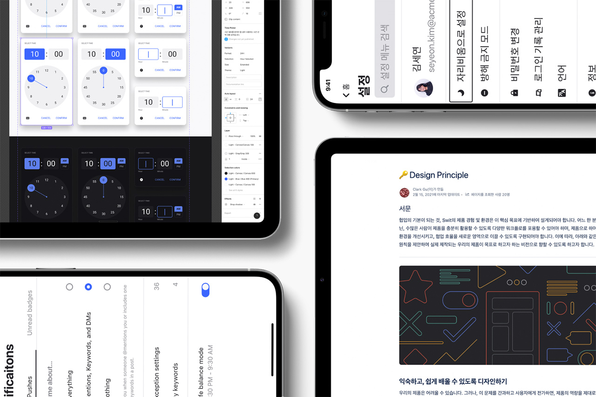

다양한 재료가 온데 합쳐지는 크레이프처럼
Swit은 출시 이래 획기적인 속도로 기능을 추가하며, 출시 당시와 대비해 그 틀만 같고 다른 제품이라 봐도 될 정도로 발전했습니다. 그러나, 지금까지 큰 설계 변경 없이 서비스가 계속되었고, 낡은 설계로 인해 더 혁신적인 기능을 담기 어려워졌습니다. 이런 구조의 부채를 해결하기 위해 더 시장 선도적인 방식으로 대체해야 한다고 판단했고, 곧바로 관련 프로젝트를 진행하기 시작했습니다. Crêpe는 이러한 프로젝트의 연장선상으로, 과거 기준으로 설계된 Swit Orbit을 대신하여 Swit의 차세대 인터페이스이자 보다 현대적인 디자인 시스템이 되도록 구축했습니다.
내일의 가능성으로 만드는 지금의 형태
차세대 프로젝트는 회사의 비전과 개발 방향에 따라 수시로 변경되었기에, 무리 없이 이런 변화에 대응할 수 있도록 설계해야 했습니다. 따라서 제품을 나누고 나눈 요소를 다시 정의하고 조립하는 형식으로 제작했던 Swit Orbit과 달리, 정통적인 어토믹 디자인 원리에 따라 최소 요소부터 차근차근 구축하는 과정으로 제작했습니다. 또한, 상황의 특수성을 반영하여 지금의 모습에 기반을 두나, 장차 제품이 어떤 모습이 되어도 표현할 수 있도록 확장 가능하고 유연한 설계를 골자로 잡았습니다.
무수한 갈래가 담긴 도서관
위의 기본적인 목표와 함께 디자인 단계에서는 Figma의 Variants를 보다 적극 활용했습니다. 상태와 크기 변화, 들어가는 컨텐츠의 종류 등 모든 표현의 경우의 수를 예측해 대응되는 컴포넌트를 미리 제작해두고, 이를 Property 값 편집만으로 다룰 수 있도록 제작했습니다. 컴포넌트의 변화 구조를 시각적으로 쉽게 파악할 수 있어, 이를 토대로 컴포넌트와 제품을 설계하는데 구조 및 디자인 의도 이해하는 부분 등에서 큰 도움을 주었습니다.
달콤한 크레이프가 되도록 재료를 깎고 썰어
기존 시스템은 색상, 타이포그래피, 깊이감 등 기본적인 스타일을 그 형태에 기초한 구조로 관리했습니다. 각각의 스타일 변수가 역할에 구애받지 않고 유연하게 사용할 수 있었으나, 사용례를 별도의 설명 없이 예측하기 어려운 문제를 가지고 있었습니다. 이에 따라, 형태론적 체계로 만들었던 전 세대의 부족한 부분을 답습하지 않기 위해 역할을 보다 명확하게 지명할 수 있는 의미론적인 디자인 토큰 설계로 구축하기로 했습니다.
의미론적 설계는 스타일에 한정된 역할을 부여하여 경직되고 복잡해지는 구조적 문제를 안고 가야 해 이 문제를 풀어나가야 했습니다. 따라서 그 해답으로, 기존 방식과 이 의미론적인 구조를 혼용하는 방법을 채택했습니다. 색상 팔레트를 그 예로 들면, 원래와 같이 형태 위주의 색상 변수 집합인 “기본 색상 팔레트”를 테마의 수만큼 만들고 상위에 있는 시맨틱 토큰이 의미에 알맞은 색상을 각 테마의 팔레트에서 지명합니다. 이 구조 덕분에 시맨틱 토큰이 사용자의 설정에 따라 참조하는 팔레트 색상을 달리할 수 있기에 능동적인 테마 대응이 가능해졌습니다. 더불어, 의미론적인 설계를 무너뜨리지 않으며 확장할 수 있어 시스템을 유지하고 발전시키는데 훨씬 용이해집니다.
색상을 시작으로, 타이포그래피와 깊이감 등의 디자인 언어는 이런 시맨틱 토큰 설계를 기초로 제품에 적용되었습니다. 제품 개발에 함께하는 모든 사람이 가장 작은 요소부터 복잡한 컴포넌트까지 그 의미를 의식하며 활용할 수 있도록 설계했습니다.
우리가 목표로 하는 사람을 명확하게 설정할 수 있어도, 우리의 제품을 쓰는 사람들을 특정할 수는 없습니다.
Crêpe가 이전과 대비해 크게 차이점을 가지는 부분은 “접근성의 고려”입니다. 우리의 제품을 사용할 이상적인 타겟을 설정하고, 그에 맞는 기능과 경험을 준비하는 것은 중요합니다. 다만, 그렇게 노린 사람만이 실제 사용자가 되리라 장담할 수는 없습니다. 따라서 언어, 장애, 성별, 나이 등 신체적, 그리고 문화적 제약 조건을 초월하여 사용할 수 있어야 한다고 믿었고, 그러기 위해 기본 단위부터 복잡한 레이아웃까지 관련된 접근성 기준을 충족할 수 있도록 설계했습니다.
선명하게, 선뜻 명쾌하게 읽을 수 있도록.
색상과 타이포그래피는 각각의 기본적인 접근성 기준을 만족하도록 설계했습니다. 먼저, 색상은 WCAG 2.0 대비 기준을 통과할 수 있도록 정의되었습니다. 기본 색상 팔레트의 경우, 각 색상군의 대표색에 검정이나 흰색 텍스트가 올라왔을 때, 그리고 각 명/채도가 가장 높고 낮은 색이 서로 견주었을 때, 이 기준을 충분히 통과하도록 구축되었습니다. 상위 팔레트인 시맨틱 토큰 또한, 이러한 기본 색상 팔레트의 구조를 고려하여 실제 제품에서도 알맞은 시인성을 제공할 수 있도록 만들어졌습니다.

可能性的 ものがたりを 만들다 with the World.
제품에 담기는 텍스트는 사용자의 언어를 차별 없이 지원하고자 했습니다. 기본적으로 라틴 문자와 한글만 지원했던 기존의 지원 방향을 넓혀 일본어, 중국어 텍스트 등에 대한 정책을 시스템에 포함했습니다. 또한, 공식적으로 지원하지 않는 언어에 대해서도 가능한 OS가 제공하는 Fall-back 서체의 사양을 확인했고, RTL(우횡서) 환경을 부분적으로 지원하여 다양한 문화권 사용자들이 사용하는데 어려워하지 않도록 고려되었습니다.
눈과 귀, 그리고 손끝으로 만들어질 새로운 가치를 기대하며
Crêpe 의 가장 큰 접근성 목표는 “보는 방법이 다른 사람도 함께 사용할 수 있도록” 하는 것이었습니다. 먼저, 눈으로 세상을 보는 사람들을 위해 컴포넌트는 텍스트 스타일에 영향을 받도록 설계되었습니다. 접근성 옵션으로 텍스트의 크기가 커져도, 정보를 자르지 않고 온전히 표시할 수 있게 레이아웃을 조정하며, 중요한 텍스트는 아이콘 등의 보조적인 인식 장치를 두거나 2종 이상의 스타일 차이를 두어 색상, 크기, 그리고 굵기 등이 변화하여도 내용을 이해할 수 있도록 합니다.
접근성 설계
눈뿐만 아니라 소리로, 또는 감촉으로 세상을 보는 사람들에게도 Swit은 자연스럽게 읽힐 수 있어야 했습니다.
이를 위해 컴포넌트는 그 역할에 따라 가상의 높낮이와 위계를 부여받아, 이에 기초를 두어 레이아웃을 설계하고 각 플랫폼 및 웹이 권장하는 시맨틱한 구조로 만들어 자연스럽게 읽힐 수 있게 만들었습니다. 보이지 않는 디자인을 하는 것, 이런 과정을 통해 보는 방식을 달리하는 사람들도 Swit을 사용해 새로운 가치를 만들어낼 수 있도록 하고자 했습니다.

세상 사람들에게 사랑받는 달콤함이 되도록
기반 없이 새롭게 제작하며 디자인 토큰 원리나 새로운 방식의 협업 등, 더 정교하고 모두의 이해를 일치시킬 수 있는 작업을 해볼 수 있었습니다. 더불어, 고도화된 접근성을 융화시켜 제품이 차별하지 않고 더 많은 세상 사람들에게 다가갈 수 있도록 도울 수도 있었습니다. 이처럼 갚진 경험을 준 디자인 시스템 Crêpe는, 앞으로도 제품의 수준을 큰 폭으로 끌어올리는 기폭제가 될 것입니다.